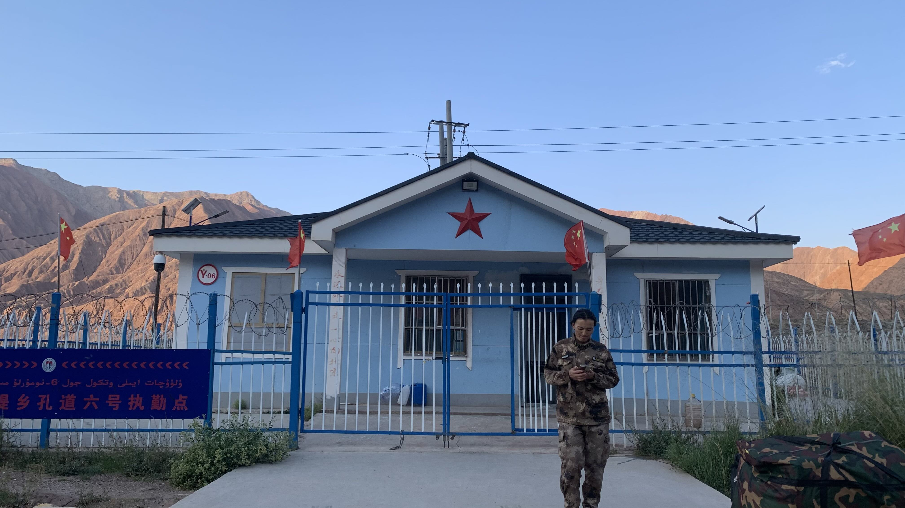
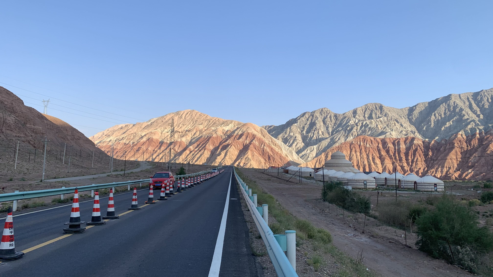
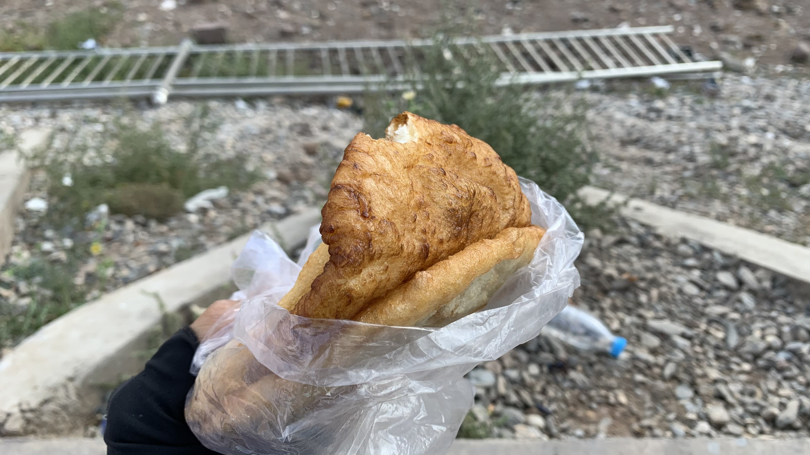
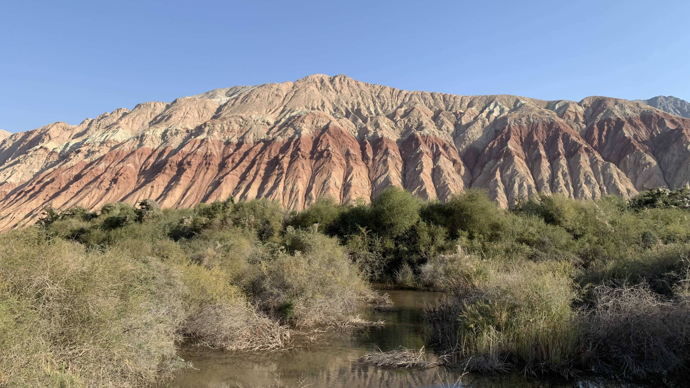
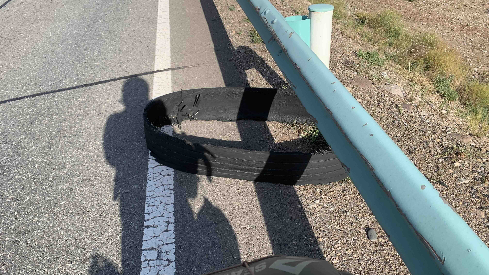
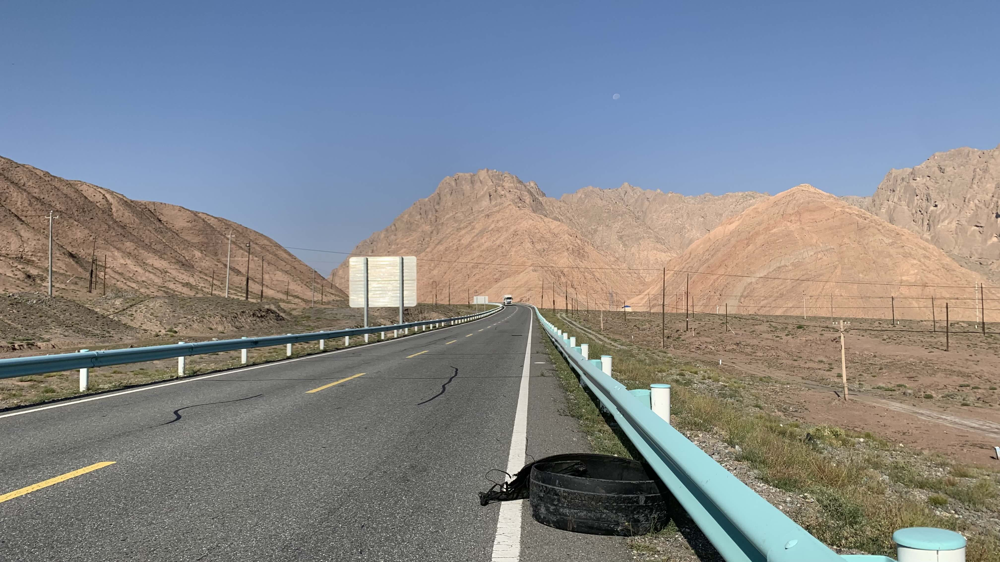
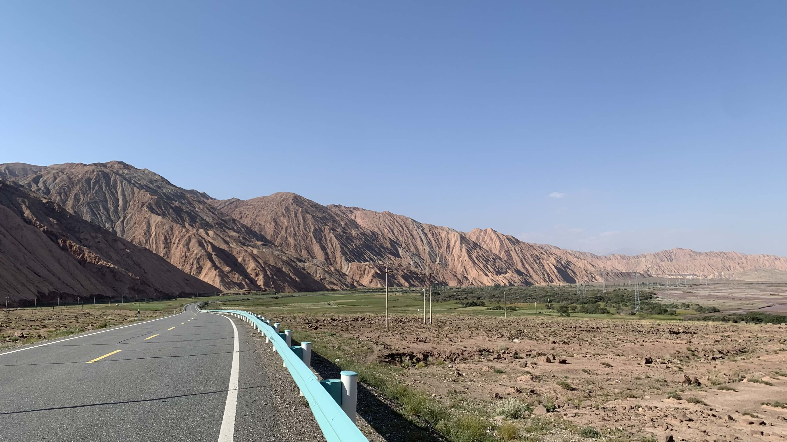
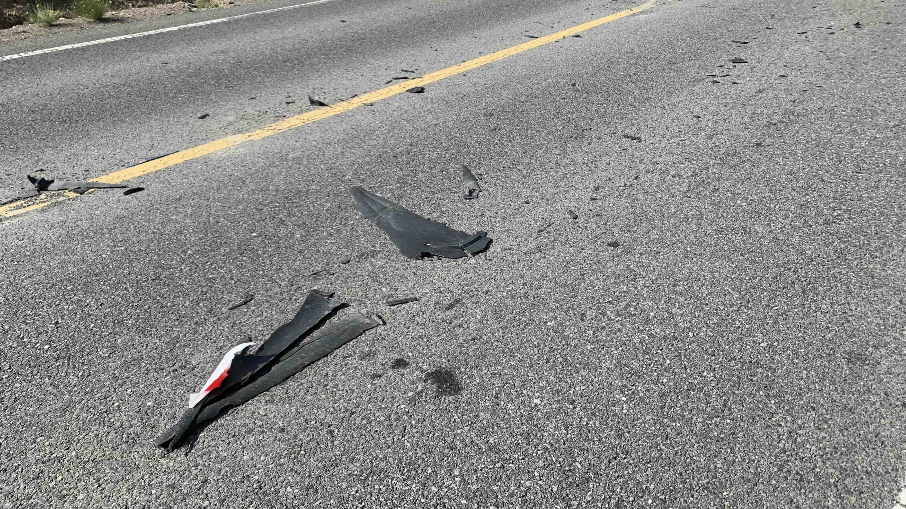
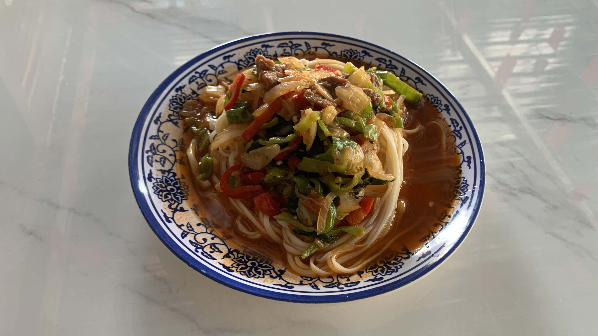
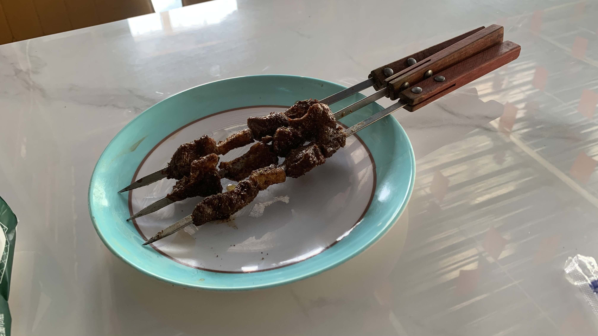

k-Day 184｜ಥ_ಥ
進入一棟看來有些破舊的建築，裡面擠滿提著藍色扁形公事包的男性。輪到我交上護照和電子簽證，海關人員對著電腦螢幕皺眉，拿下牆上的一張表格，又對著螢幕皺眉，留下一句：「查不到你的紀錄。」就帶著護照和簽證頁離開。過了好一陣子，見他回到櫃檯並沒有說什麼，只是翻到蒙古延簽的那一頁，在下方蓋上紅色的吉爾吉斯入境章。
和柯族翻譯加了微信，他說在吉爾吉斯若遇上問題可以和他聯繫。

就在這裡。距離海關門口五百公尺吧

爆胎了，是鐵絲。

剛剛入境沒有要求檢查行李，正暗自慶，現在蹲在路邊連車輪都拆下來了。

拔掉鐵絲，不放心又摸了外胎內側一圈，手指被刺了一下，又是一根鐵絲，竟然一次扎破兩個洞。

換上新的內胎，太陽已經下山了。趁著餘光往前，約莫五公里處有一個前人標記的紮營點。

吉爾吉斯的山景果然不簡單，夕陽下的村莊在發亮。趕緊進村辦個電話卡吧。

地圖上標記著商店的地方，門口也貼著電話卡的圖樣，進去問了老闆卻說沒有。
天快黑了，不想再回到爆胎口岸。只好沿途遇到路人就攔下來，問他們願不願意借我 Wi-Fi。很遺憾，大部分的人聽不懂英文，聽得懂 Wi-Fi 這個字的人卻沒有網路。
正打算放棄，折返回口岸，路過一間像是商店的建築。一邊滑行，一邊搜尋門上的海報有沒有電話卡的圖樣。開著的大門裡面有位小朋友，站在櫃檯後方笑著對我招手。
進門問問吧。

沒有大人看店，兩位小老闆都會說英文，我問他們可否借我wifi讓我買網卡？帶白帽的小老闆分享熱點給我。重新買了張eSIM，終於連上網了ಥ_ಥ
世界的未來還得靠這些小孩，感恩小孩。
「拉赫瑪特」我說。
發不出彈舌音，店裡逐漸聚集的孩子們又像在蒙古時一樣，彈著舌頭叫我說：「啦啦啦啦赫瑪特」。而我一樣學不來。
其實商店裡包含小老闆，總共有五位小孩。其他三個小女生一個不入鏡，兩個太小了不宜上網。我問他們這裡可否換錢，大家異口同聲說口岸才有，再往前就沒有了。

有了網路人開朗了，車上的水和食物還夠，實在不想回到爆胎口岸。牽著二十三號剛要往山的方向騎，白帽子小老闆竟然追出來揮手，指著後方讓我往口岸走。
那就回去吧。換了錢明天再過來買些東西感謝他。

貨櫃商店區的人潮少了，擠在路上等通關的卡車依然看不到盡頭。
匯率並不好，每間店家都堅持只收一百元美金。
天色已經暗到看不清人臉，其實心裡相當著急。鼓起勇氣和貨櫃裡正在辦電話卡的中國卡車司機大哥們搭訕，大哥們一開始也說自己索姆不多。也許是看我在貨櫃區繞來繞去，辦完電話卡出來後，其中一位大哥主動找來另外兩位司機朋友，一起湊錢。而我則緊急聯繫遠在安徽的表弟，請他透過支付寶轉了兩百元，才終於換得兩千五百索姆。
在暗處抽煙的另外兩位卡車司機大哥似乎一直留意著我們的動靜。見我收好錢包，他們走來問我換得如何，給了我一些後續路況和治安提示，還幫我找了商店和卡車之間的一處平坦高地搭帳篷。
車燈照到的範圍全都是碎玻璃和肉眼無法辨識的垃圾。整個口岸周遭的貨櫃區都是如此，即便明早再度爆胎也不會太意外。
今日花費：換匯 200人民幣 2500索姆